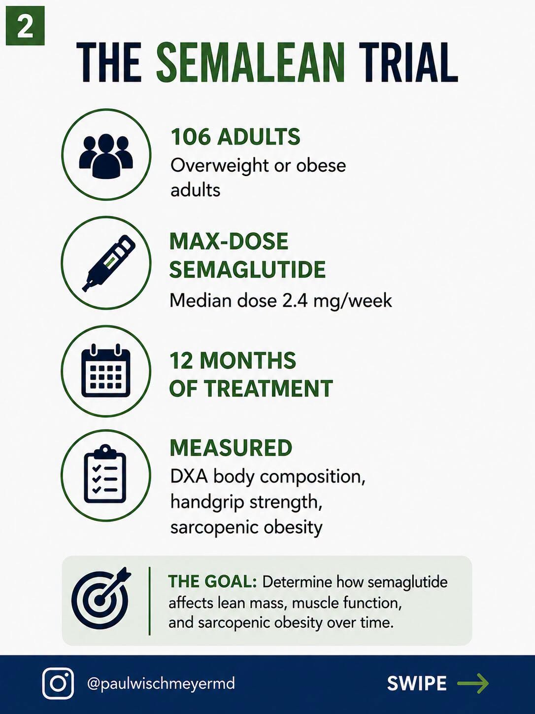
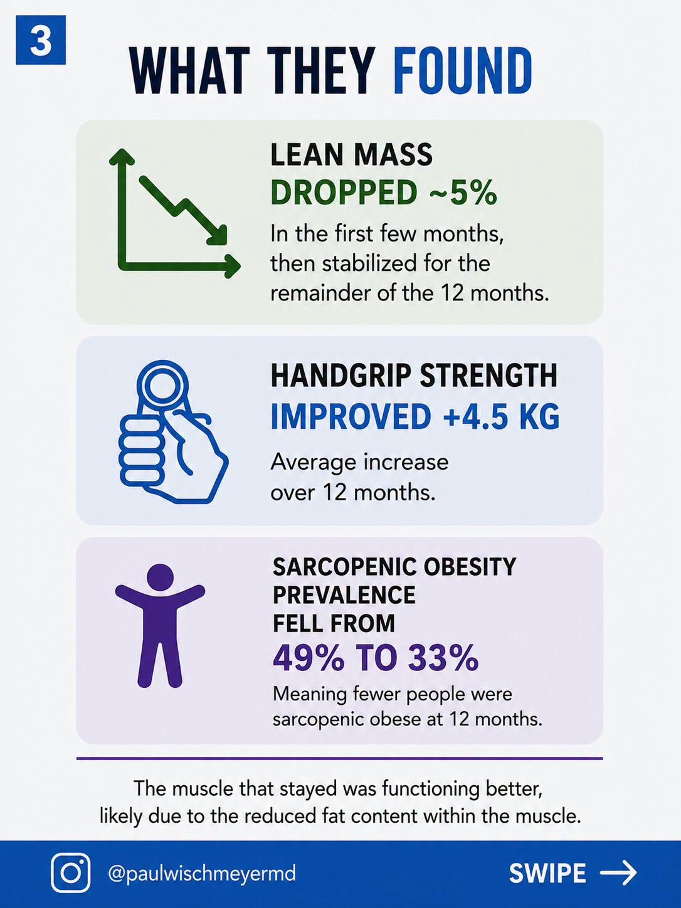
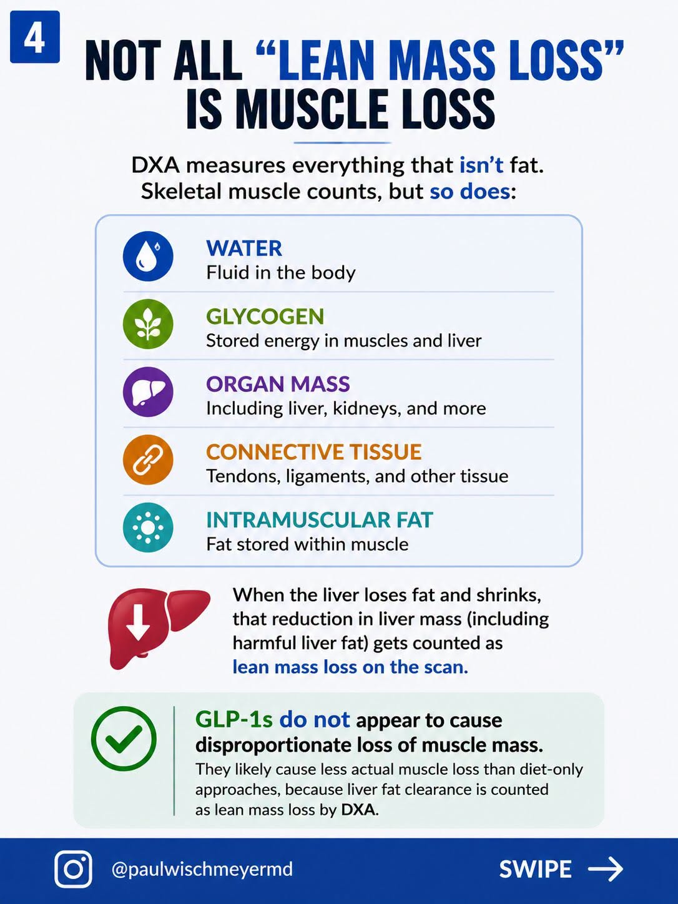
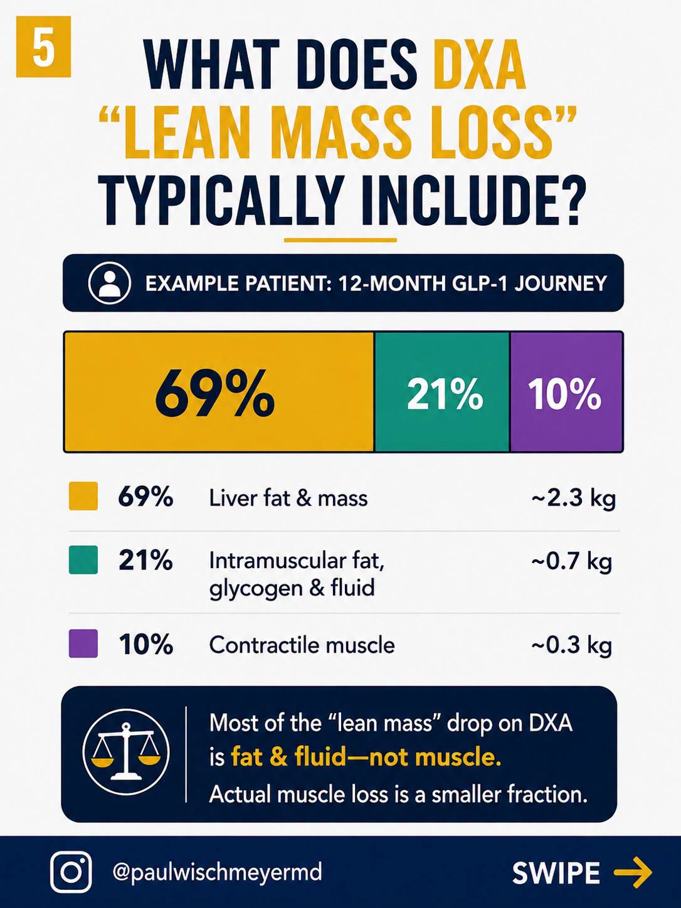

The evidence is accumulating that— instead of promoting muscle loss— GLP1 drugs actually improve muscle quality, while promoting fat loss.
That’s exactly what you’d expect from an intervention that works via autophagy.
“The newer SEMALEAN trial looked beyond DXA and found that after 12 months of maximum-dose semaglutide:
- Lean mass decreased only ~5% before stabilizing.
- Handgrip strength improved by 4.5 kg.
- Sarcopenic obesity fell from 49% to 33%.
Most importantly, the muscle that remained functioned better…”
What does it mean to have higher quality muscle?
Roughly speaking, it means that your muscles can perform the same exercise workload with less overall muscle tissue.
(The 150lb guy who can bench press 200lbs likely has higher muscle quality than the 300lb guy who can only bench the same.)
What might be happening to cause this?
Autophagy preferentially catabolizes the old damaged muscle tissue first, while improving the health of the younger undamaged tissue that remains. You may end up with less muscle tissue overall (because you got rid of the bad stuff), but what remains is higher quality.
————-
If your goal is longevity, what you should really care about is muscle quality. That’s what really matters.
You don’t want to have high muscle mass that is mostly composed of old damaged tissue. This is counterproductive. That is low-quality muscle.
#glp1HD #glp1muscleHD #autophagyHD #dexascansHD #muscleHD #step1HD #semaleanHD #musclequalityHD
Do GLP-1 medications really cause major muscle loss? Or have we been misunderstanding what DXA scans are measuring? 🤔
For years, the “40% muscle loss” claim has been one of the biggest concerns about GLP-1 medications.
💬 True or False: GLP-1 medications cause you to lose 40% of your muscle. Comment your answer before reading on!
⬇️
The often-cited 40% figure comes from the STEP-1 trial, where about 40% of the weight lost was reported as lean tissue on DXA—not pure muscle.
The key limitation? DXA doesn’t measure muscle directly. It labels everything that’s not fat as “lean mass,” including:
💧 Water
- Glycogen
- Organ mass (including liver)
- Connective tissue
- Intramuscular fat
- Skeletal muscle
As liver fat decreases and the liver shrinks, that reduction is also counted as lean mass loss, even though it isn’t muscle. Notably, the STEP-1 placebo group also showed DXA-measured lean mass loss despite minimal weight change, suggesting part of the finding reflects how DXA measures body composition.
The newer SEMALEAN trial looked beyond DXA and found that after 12 months of maximum-dose semaglutide:
✅ Lean mass decreased only ~5% before stabilizing.
✅ Handgrip strength improved by 4.5 kg.
✅ Sarcopenic obesity fell from 49% to 33%.
Most importantly, the muscle that remained functioned better, likely because fat within the muscle was reduced.
The bottom line
Muscle function may be more important than lean mass measured by DXA alone. Current evidence suggests GLP-1 therapy can improve muscle quality while promoting fat loss—especially when paired with adequate protein intake and resistance training.
📚 References
- Langer J, et al. J Cachexia Sarcopenia Muscle. 2025.
- Wilding JPH, et al. N Engl J Med. 2021;384:989-1002.
- Yan H, et al. Diabetes Metab Syndr Obes. 2021;14:4481-4488. DOI: 10.2147/DMSO.S338097
Do you think muscle function should be measured more often than DXA lean mass when evaluating GLP-1 therapy?👇




